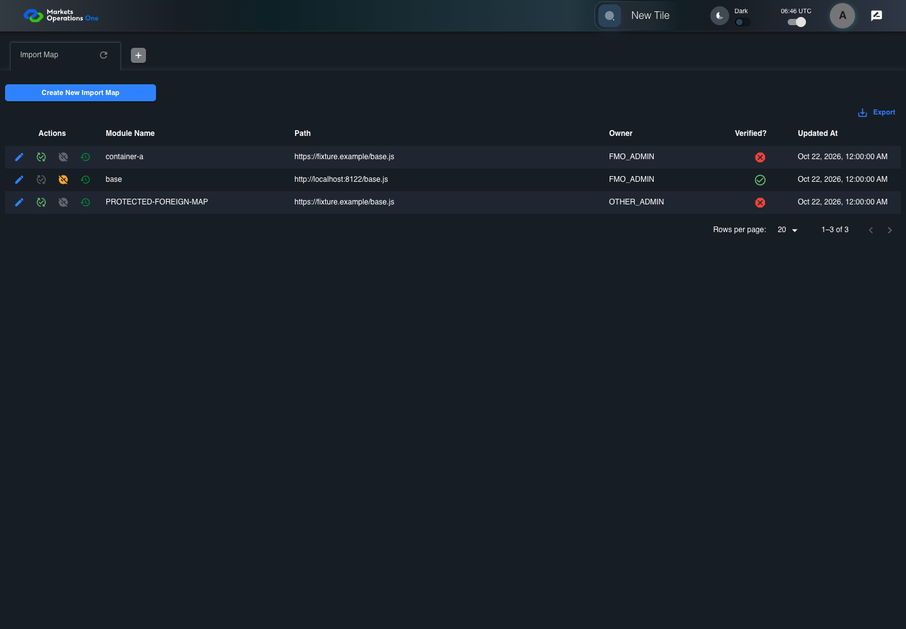

BFF-ADM-068 current BFF administration through actual UI
FAIL · application/run-072/bff-adm-068-current-bff-administration-through-actual-ui-2bdcfa1a7d4d-attempt-1 · ACTUAL_APPLICATION_LOCAL_SERVICES
Actual current React and exact-current BFF admin controllers/services/JPA with actual migration DDL in disposable PostgreSQL. Controlled OUD/EMS2 identities and local Spring bootstrap. Fixture SQL seeds/mutates isolated records; service errors are actual database errors. Undefined agreed messages remain unresolved acceptance.
2026-10-22T06:46:01.602Z to 2026-10-22T06:46:11.335Z
Assertions and result · Artifact manifest · Exact run inputs and source hashes
Result SHA-256:cf6d603a52f7cf5874a925d927ea714d27a2e9b14c5ad61419237a451edae99eRetained failure details
[
{
"message": "Error: \u001b[2mexpect(\u001b[22m\u001b[31mlocator\u001b[39m\u001b[2m).\u001b[22mtoBeVisible\u001b[2m(\u001b[22m\u001b[2m)\u001b[22m failed\n\nLocator: locator('.MuiAlert-root').filter({ has: locator('.MuiAlert-message') })\nExpected: visible\nTimeout: 5000ms\nError: element(s) not found\n\nCall log:\n\u001b[2m - Expect \"toBeVisible\" locator('.MuiAlert-root').filter({ has: locator('.MuiAlert-message') }) with timeout 5000ms\u001b[22m\n\u001b[2m - waiting for locator('.MuiAlert-root').filter({ has: locator('.MuiAlert-message') })\u001b[22m\n",
"stack": "Error: \u001b[2mexpect(\u001b[22m\u001b[31mlocator\u001b[39m\u001b[2m).\u001b[22mtoBeVisible\u001b[2m(\u001b[22m\u001b[2m)\u001b[22m failed\n\nLocator: locator('.MuiAlert-root').filter({ has: locator('.MuiAlert-message') })\nExpected: visible\nTimeout: 5000ms\nError: element(s) not found\n\nCall log:\n\u001b[2m - Expect \"toBeVisible\" locator('.MuiAlert-root').filter({ has: locator('.MuiAlert-message') }) with timeout 5000ms\u001b[22m\n\u001b[2m - waiting for locator('.MuiAlert-root').filter({ has: locator('.MuiAlert-message') })\u001b[22m\n\n at BffAdminApp.errorAlert (/Users/lushevol/code/github/ratan-release-impact/workbench/e2e/support/bff-admin-app.ts:166:169)\n at /Users/lushevol/code/github/ratan-release-impact/workbench/e2e/audit-specs/bff-admin.spec.ts:49:166\n at AuditCapture.step (/Users/lushevol/code/github/ratan-release-impact/workbench/e2e/support/audit-fixture.ts:94:21)\n at /Users/lushevol/code/github/ratan-release-impact/workbench/e2e/audit-specs/bff-admin.spec.ts:18:27",
"location": {
"file": "/Users/lushevol/code/github/ratan-release-impact/workbench/e2e/support/bff-admin-app.ts",
"column": 169,
"line": 166
},
"snippet": "\u001b[90m at \u001b[39m../support/bff-admin-app.ts:166\n\n 164 | }\n 165 | async assertUnchanged():Promise<void>{expect(await this.snapshot()).toEqual(this.expectedPersisted);expect(await this.gridSnapshot()).toEqual(this.initialGrid);}\n> 166 | async errorAlert(exact?:string):Promise<void>{const alert=this.page.locator('.MuiAlert-root').filter({has:this.page.locator('.MuiAlert-message')});await expect(alert).toBeVisible();await expect(alert).toHaveClass(/MuiAlert-standardError|MuiAlert-filledError|MuiAlert-outlinedError/);if(exact)await expect(alert.locator('.MuiAlert-message')).toHaveText(exact);else {const mutation=[...this.requests].reverse().find(request=>['create','update','audit'].includes(request.operation));expect(mutation?.status).toBeGreaterThanOrEqual(400);await expect(alert.locator('.MuiAlert-message')).not.toHaveText('');await this.audit.record('undefined-message-contract',{canonical:'Agreed message is unavailable. Only real error response and visible nonempty error are characterized.',actual:await alert.innerText()});}}\n | ^\n 167 | async cell(name:string,id:string){return this.ui.reveal(adminFields[name]??name,id);}\n 168 | }\n 169 |"
}
]Machine observations
- actual-identity-projection.json
826dc2f6018bc315b08b186cc9d47b63579f03ef1d7fc3eeffe9270f9a109d8d - baseline-inputs.json
f6f106fe706b57f0cf55d7a8c52dcfe3b0ab100dfd966a2fd02b36d1cd156ae2 - bff-boundary.json
882fa74a7c69771873d134c7bc208ab8c6af508a415299e7b7c6622bf927d539 - fixture-step-4.json
70e494bf549316cf7b2078497f5d5f569b9a2258a72407592618e7a8a9ab1317 - initial-persisted-records.json
7d52e98a92e5cdb8d5ab2e34f354ddfec66770fc2cd7fd54d0f402c99c406527 - rejection-or-policy-observation.json
99f95db481323358be41329a167049e7015f12e3000295f1419ffe316975f3c7 - stale-grid-contract.json
e5016f0cc1d8f10e0d00452641b43eb027e76c3a4a72c3cf50bd013b53ffc0be
Screenshot capture: CAPTURED. Named frames: 7.
Step screenshot bindings: INCOMPLETE. 6/7 canonical steps have execution screenshots.
Bindings measure structural coverage only. They do not establish screenshot content quality or relevance.
Screenshot content review: NOT_REVIEWED. Recorded context: 0/7 frames. Identical image bytes: 5 repeated frames. Recorded context does not establish human visual review.
Step 7 has no screenshot from an executed step.
Canonical step timeline
Given Admin A uses subject "admin-a" with role "FMO_ADMIN" in an isolated authenticated browser
Execution: PASSED.
1. step-01 Visible state after step 1: Given Admin A uses subject "admin-a" with role "FMO_ADMIN" in an isolated authenticated browser
2026-10-22T06:46:04.908Z · 1440×1000
Step: /Users/lushevol/code/github/ratan-release-impact/workbench/tasks/ui-test-coverage-20261022/test-cases.md:17559
SHA-256:9a9b7768895439384496103a58f6a7a7595fea9cb2b9f5cc1e3b48d50614a964And the controlled Import Map fixture records the initial grid rows and persisted values
Execution: PASSED.
2. step-02 Visible state after step 2: And the controlled Import Map fixture records the initial grid rows and persisted values
2026-10-22T06:46:05.072Z · 1440×1000
Step: /Users/lushevol/code/github/ratan-release-impact/workbench/tasks/ui-test-coverage-20261022/test-cases.md:17560
SHA-256:9a9b7768895439384496103a58f6a7a7595fea9cb2b9f5cc1e3b48d50614a964Image bytes match frame 1. An unchanged image can be valid for consecutive assertions. This match does not establish correct step content.
And the controlled stale grid exposes Import Map record 901 owned by "OTHER_ADMIN"
Execution: PASSED.
3. step-03 Visible state after step 3: And the controlled stale grid exposes Import Map record 901 owned by "OTHER_ADMIN"
2026-10-22T06:46:05.153Z · 1440×1000
Step: /Users/lushevol/code/github/ratan-release-impact/workbench/tasks/ui-test-coverage-20261022/test-cases.md:17561
SHA-256:9a9b7768895439384496103a58f6a7a7595fea9cb2b9f5cc1e3b48d50614a964Image bytes match frame 2. An unchanged image can be valid for consecutive assertions. This match does not establish correct step content.
And Admin A has no "OTHER_ADMIN" entitlement
Execution: PASSED.
4. step-04 Visible state after step 4: And Admin A has no "OTHER_ADMIN" entitlement
2026-10-22T06:46:05.230Z · 1440×1000
Step: /Users/lushevol/code/github/ratan-release-impact/workbench/tasks/ui-test-coverage-20261022/test-cases.md:17562
SHA-256:9a9b7768895439384496103a58f6a7a7595fea9cb2b9f5cc1e3b48d50614a964Image bytes match frame 3. An unchanged image can be valid for consecutive assertions. This match does not establish correct step content.
When Admin A clicks the button labeled "Audit" in the Import Map grid row with "Record Id" "901"
Execution: PASSED.5. step-05 Visible state after step 5: When Admin A clicks the button labeled "Audit" in the Import Map grid row with "Record Id" "901"
2026-10-22T06:46:05.631Z · 1440×1000
Step: /Users/lushevol/code/github/ratan-release-impact/workbench/tasks/ui-test-coverage-20261022/test-cases.md:17563
SHA-256:50321eb1bb6ff46c181a5b636953ead69c4ce9d7ec758d43a10094925c88f044Then the alert with severity "error" in the portal snackbar displays the agreed audit access-denial message
Execution: FAILED.
6. step-06-failure Visible state when step 6 failed. Later steps did not execute.
2026-10-22T06:46:10.719Z · 1440×1000
Step: /Users/lushevol/code/github/ratan-release-impact/workbench/tasks/ui-test-coverage-20261022/test-cases.md:17564
SHA-256:50321eb1bb6ff46c181a5b636953ead69c4ce9d7ec758d43a10094925c88f044Image bytes match frame 5. An unchanged image can be valid for consecutive assertions. This match does not establish correct step content.
And no cell in dialog "Audit" displays a protected value from record "901" on the Import Map administration page
Execution: NOT_EXECUTED.No screenshot is recorded for this step. No executed state is claimed.
Additional named frames

The visible state when the test failed.
2026-10-22T06:46:10.827Z · 1440×1000Step: Test source: /Users/lushevol/code/github/ratan-release-impact/workbench/e2e/audit-specs/bff-admin.spec.ts:11
SHA-256:
50321eb1bb6ff46c181a5b636953ead69c4ce9d7ec758d43a10094925c88f044Image bytes match frame 6. An unchanged image can be valid for consecutive assertions. This match does not establish correct step content.
Screenshots establish visible state only. Assertions and traces support functional claims.